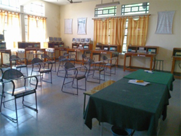
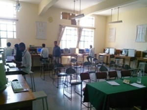
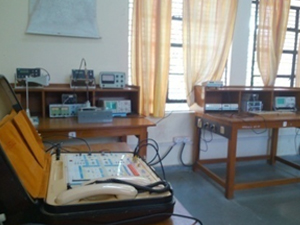
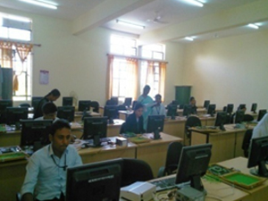
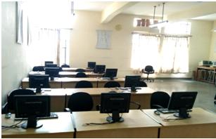

Laboratories:






ELECTRONICS Department
The department of Electronics and Communication Engineering at Ghousia College of Engineering was started during the year 1985, and has an intake of 120 students every year. The B.E program is approved by AICTE and Government of Karnataka,and affiliated to Visvesvaraya Technological University (VTU), Belgaum, accredited by NBA. The main aim of the department is to provide the quality education in the field of Electronics and Communication Engineering, as the global scene is exposed to new & Recent emerging technologies especially in Communication, VLSI subsystems and embedded technologies. The 21st century is the century of knowledge and technical shifts. The paradigm shift in technology is the growing need of learners and the society in particular. Hence the Management of Ghousia Industrial and Engineering Trust rightly decided to expose the changes, the society of today is made to acquaint. The department of Electronics and Communication has separate laboratories well equipped with the latest equipments and satisfying curriculum requirements of Visvasvaraya Technical University and AICTE New Delhi. The faculties are well qualified and there is lot of enthusiasm amongst them to go for research which we feel is not far away from our dreams. As such the Management is very keen to promote avenues to the faculty to take up research work to their advantage and benefit from learning. The department has started IEEE students’ branch of GCE in the year 2006 and the centre of Excellency in VLSI in 2010. The Department has received Rs. 10.26 lakhs for modernizing the VLSI design and Microcontroller Lab under MODROBS schemes from AICTE in the year 2007 Rs. 8.6 lakhs for modernizing the Digital Signal Processing Lab under MODROBS schemes from AICTE in the year 2009. The staff are deputed to attend seminar / workshops etc to update their knowledge, apart from conducting such events in the college itself. The faculty has delivered lectures / presented papers at International Journals, International & National level Conferences. The students are also encouraged to present papers at symposia. The department is striving hard in training the students not only in their studies but also to develop their personality and other qualities required to face interviews.
To be recognized as the best Electronics and Communication Engineering Department in our country by imparting good quality Education and moulding the students to become good citizens.
To provide high quality technical education and training to the budding Electronics & Communication engineers to nurture excellent Electronics & Communication Engineering skills, human and social values, national and global competence.
1. To produce highly capable Electronics & Communication engineers equipped with strong Electronics & Communication engineering and allied fundamentals necessary to face the professional competition and achieve excellence.
2. To produce Electronics & Communication engineers who can demonstrate their analytical, design skills and abilities to apply the principles of mathematics, basic sciences and engineering in effectively overcoming Electronics & Communication engineering problems and challenges in their professional career.
3. To produce Electronics & Communication engineers with practical knowledge, positive attitude, sense of responsibility and strong professional ethics clubbed with zeal for lifelong learning and research.
a) An ability to apply knowledge of mathematics, science, and engineering,
b) An ability to design and conduct experiments, as well as to analyze and interpret data,
c) An ability to design a system, component, or process to meet desired needs within realistic constraints such as economic, environmental, social, political, ethical, health and safety, manufacturability, and sustainability,
d) An ability to function on multidisciplinary teams,
e) An ability to identify, formulate, and solve engineering problems,
f) An understanding of professional and ethical responsibility,
g) An ability to communicate effectively,
h) The broad education necessary to understand the impact of engineering solutions in a global, economic, environmental, and societal context,
i) A recognition of the need for, and an ability to engage in life-long learning,
j) A knowledge of contemporary issues, and
k) An ability to use the techniques, skills, and modern engineering tools necessary for engineering practice.
E-mail: tsirajahmedhodec@gmail.com
Laboratories: